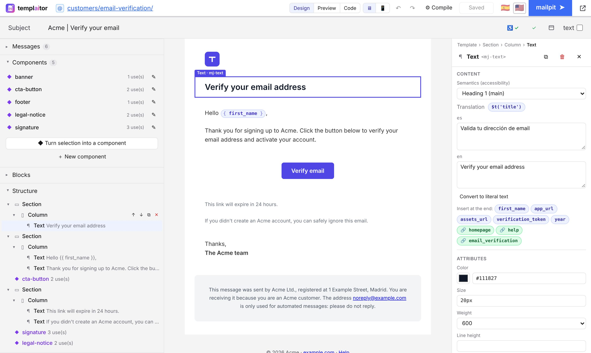
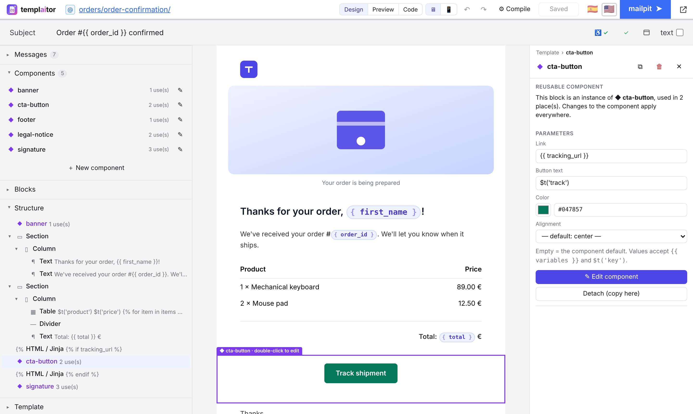
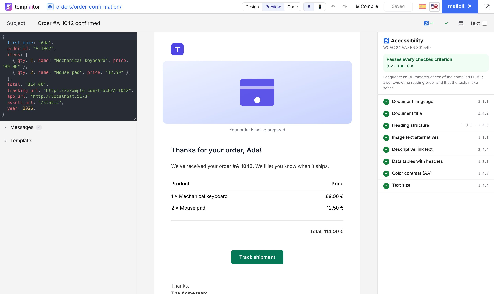
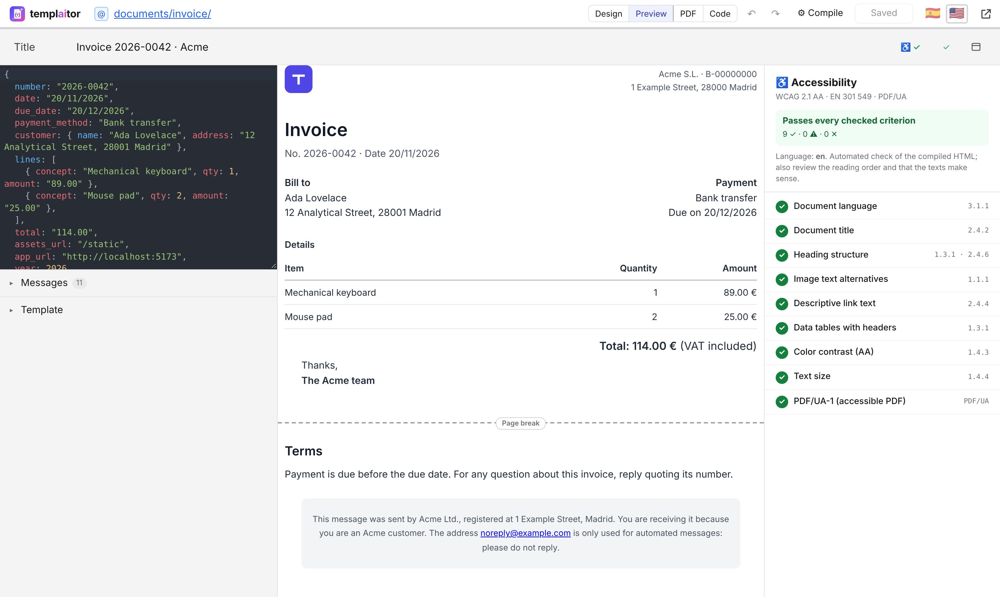
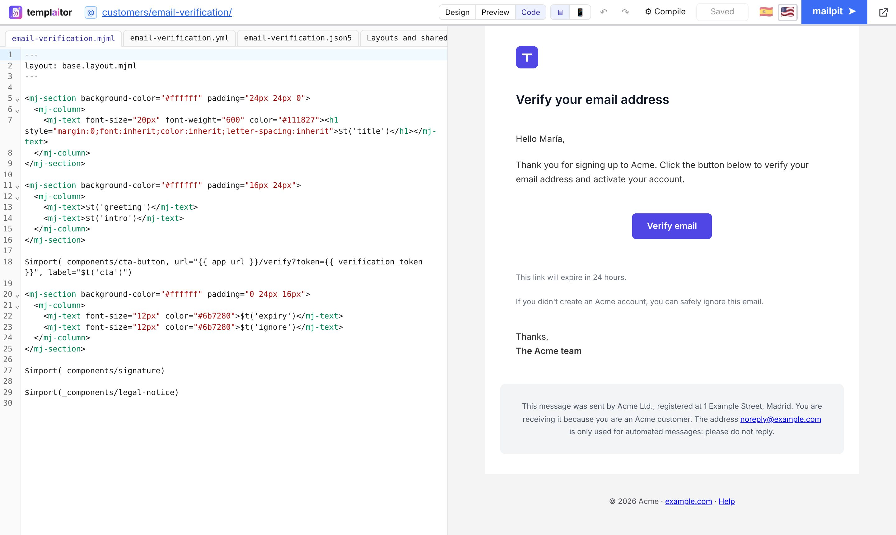
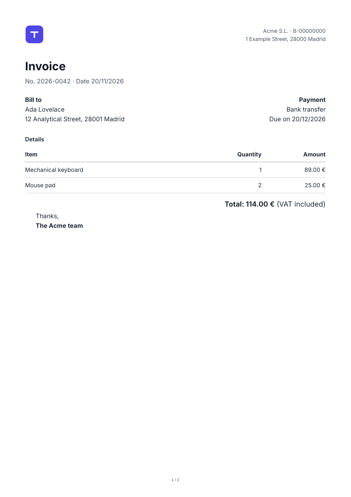

WYSIWYG on real output
Click any block of the compiled MJML to select it and type directly into texts and buttons. Drag and drop the structure.
Design MJML templates on the real rendered output, keep your texts in YAML per language and ship Jinja2 HTML, plain text and tagged PDF documents your backend renders at runtime.

Features
templaitor started as the email engine of a real product and grew into a generic editor:
any project with a templaitor.config.yml can compile and edit its templates.
Click any block of the compiled MJML to select it and type directly into texts and buttons. Drag and drop the structure.
{{ }}, {% %} and {# #} survive the MJML compiler, ready for minijinja, Jinja2 or Tera.
Every text lives in a YAML file per language. New blocks are translatable from the start; missing translations are flagged.
Footers, buttons and legal notices with their own texts and typed parameters: text, color, select, image and boolean.
Invoices and letters from the same templates, with page size, margins, headers, footers and page numbers.
Every preview is checked against WCAG 2.1 AA, and PDFs are validated with veraPDF against PDF/UA-1.
Tour
Screenshots of the demo project that ships with the repository.
Select an instance and fill in its parameters. Double-click it to edit the component itself; changes apply to every template that uses it.
$t('key').$content as a slot.
cta-button instance and its parameter form.The preview renders the template with JSON5 demo data. Next to it, every WCAG criterion is checked as you edit.

Mark a template as format: pdf and it becomes a document: same components and texts, plus page options.

The visual editor and the code always see the same thing: the MJML, the YAML texts and the demo data are the single source of truth.
--strict.
Accessibility first
Emails and documents must meet WCAG 2.1 AA / EN 301 549 (the standard behind the European Accessibility Act), and PDFs must be PDF/UA-1. templaitor checks both and tells you exactly what to fix.
| Engine | PDF/UA-1 | License |
|---|---|---|
| WeasyPrint (recommended) | ✓ Compliant · 106 rules passed | Free (BSD) |
| Prince | PDF/UA-1 profile · not tested | Commercial |
| Chromium | ✕ Not compliant · 4 rules failed | Free |

The demo invoice rendered with WeasyPrint. Run templaitor pdf documents/invoice --validate to reproduce the result.
Get started
Node.js 20 or later. Docker is optional (local Mailpit and veraPDF).
# clone and start the editor on the demo project
git clone https://github.com/jgermade/templaitor
cd templaitor
make install
make up # http://localhost:5180# visual editor and compiler
npx templaitor editor --cwd path/to/project
npx templaitor compile --cwd path/to/project --strict
# accessible PDFs
pip install weasyprint
npx templaitor pdf documents/invoice --validateOpen source, accessible by default, and Jinja2 all the way down.